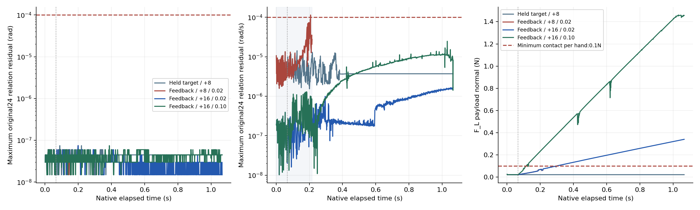
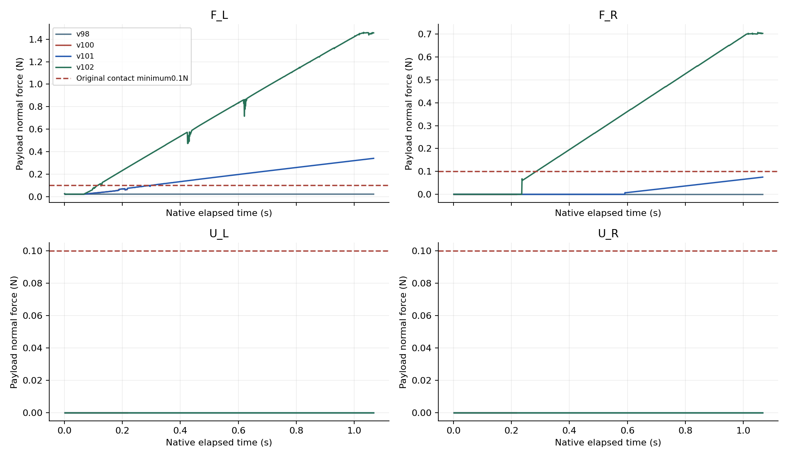

01摘要
本报告延续四臂操作安全机制的评测，单独检验接触条件下原生传动模型的持续稳定性。此前64步通过的已知初态诊断现已扩展为1024步；保持目标方法通过原位置与速度关系、接触、关节、几何和力矩门槛。恢复原有四手反馈的8次追加方法出现速度关系超限；16次追加方法完整1024步通过模型与物理门槛。提高目标速率的单独对照结果也完整保留，四手共同夹持仍需独立验证。
本轮只有一个刻意选择的开发初态，包含四个方法运行；没有新随机初态，也没有正式留出。四手共同接触及完整操作尚未完成，学习System 0关闭。历史随机对照与范围分析仍可在上一版完整报告核查。
02研究问题与对照
- 原生追加求解在持续1024步保持目标时能否维持原模型关系？98方法。
- 相同初态恢复原有接触力/关节反馈后是否仍然满足模型？100方法。
- 只把追加求解8次增至16次，是否改善相同动态接触的收敛？101方法。
- 只把目标速率从0.02提高至0.10rad/s，是否在原物理门槛下增加真实接触？102方法。
- 四手是否共同夹持并获得足够摩擦容量？全部方法另行验收，不能由模型通过替代。
03系统、方法与预先登记协议
诊断配置：2 FR3/F2 + 2 UR5/DFX，26臂关节、48手关节、50独立电机；正式2 FR3 + 2 JAKA + 4 RH56F2配置尚未认证。原生物理频率960Hz，控制60Hz，每控制周期16物理步；臂目标FIFO6周期=0.1s。铝梁尺寸0.04×0.70×0.08m、质量0.45kg，原质量、惯量、摩擦、硬限位和驱动参数不变。输入使用原生对象位姿、速度、尺寸及接触，未验证视觉闭环。
98回放8条真实提交命令后保持末条，最多1024步。100先精确复现64步，再启用原有接触力/关节反馈，按原0.02rad/s逐物理步更新耦合手指目标。101与100使用逐字节相同控制代码，只把追加求解次数8改为16。原24条URDF位置及速度关系均必须≤10⁻⁴；全74关节限位/速度超量≤10⁻⁵，9021几何代理余量≥0，意外接触≤0.1N，手梁接触≤30N/手。模型失败后保存整个控制周期并结束。
全部77原生参数字段和13初态字段独立核对。98前64步全部164物理字段复现93；100前64步复现98。101改变求解次数，因此不预设物理状态逐字节相同，但原始前64步提交命令保持相同。不得写回q/qd修补约束，也不得运行中移动或绑定物体。每次运行仅一个受监督GPU1子进程，运行后再次核验所有来源字节。
04随机范围与统计分母
本轮新随机初态=0，独立初态=1，正式留出=0；四个方法是同一开发初态的诊断运行。物理步数是时间采样数，不能当作独立成功次数，也不能计算IID成功率置信区间。方法未完成1024步时保留实际分母与失败，不补写为完整通过。
此前40000软件提案由32000 IID、4000边界和4000混合组成，覆盖1225对与64分层；这不等于50维安全操作体积认证。历史128输入开发集包含筛选，不能替代冻结策略后的两套新正式种子、每方法至少128次完整任务。完整随机范围、筛选分母与缺口 →
05结果与共同窗口比较
| 方法 | 实际/计划物理步 | 最大位置误差 | 最大速度误差 | 原诊断门槛 | 四手共同接触 / 任务 |
|---|---|---|---|---|---|
| 98: 保持目标 / 8次追加 | 1024/1024 | 7.45e-08 rad | 1.42e-05 rad/s | 通过诊断 | 0.0 s / 未完成 |
| 100: 反馈夹持 / 8次追加 / 0.02rad/s | 208/1024 | 7.45e-08 rad | 0.000114 rad/s | 未通过诊断 | 0.0 s / 未完成 |
| 101: 反馈夹持 / 16次追加 / 0.02rad/s | 1024/1024 | 7.45e-08 rad | 1.65e-06 rad/s | 通过诊断 | 0.0 s / 未完成 |
| 102: 反馈夹持 / 16次追加 / 0.10rad/s | 1024/1024 | 7.45e-08 rad | 2.47e-05 rad/s | 通过诊断 | 0.0 s / 未完成 |


06原生四视图与视频

98：保持目标 / 8次追加
100：反馈夹持 / 8次追加 / 0.02rad/s
101：反馈夹持 / 16次追加 / 0.02rad/s
102：反馈夹持 / 16次追加 / 0.10rad/s
视频来自每4控制周期保存的全部原生RGB帧，均带原始时戳和哈希；失败结束帧完整保留。末帧显示另有约0.067s停留，不增加物理步数。夹持微小运动和载荷应结合力/关节曲线判断，不能由视频外观认定抓取成功。原帧时戳与媒体对应关系
07失败分析与已知阻碍
97原生完成1024步、原生子进程退出0，但外层退出1：Kit将私有配置最低帧率12写为60，破坏原冻结来源校验。97仍按失败保留。98在运行前冻结有效60Hz配置，SDK公式int(int(1/dt)/substeps)与既有960Hz/16子步一致；其余键不变，运行后全部字节校验通过。99在GPU启动前发现审计状态标签接口不一致，启动次数0；100仅修正该接口后测试相同反馈控制代码。
100在第198步左下手拇指3速度关系残差达1.14003×10⁻⁴rad/s，周期结束于208步；当时左下手梁法向力约0.0683N，其余三手为0。独立命令、反馈和50电机力矩审计均通过，物理门槛通过，模型仍失败。该结果说明当前追加8次求解的动态接触稳定性不足，不能用保持目标通过代替。
名义指尖目标与提交目标最大差约0.603rad；以原0.02rad/s追至该名义端点的下界约30.17s（F2），另两手约13.1s。这提示命令限速与任务时限存在矛盾，但尚不能证明实际物体是否可达或何时建立四手接触。下一步需在原安全门槛下评估控制速度和接触布局，保持失败案例可复查。
08适用范围与结论边界
本轮检验一个已知初态上的原生模型与反馈命令，不是安全空间覆盖试验、完整夹持任务或学习System 0试验。9021几何点是代理，未认证连续扫掠及原生烹饪网格。实际对象输入来自原生真值，视觉感知闭环尚未通过。安装版本的原生求解器源提交不可查，本报告只能绑定已验证ABI与实际调用记录。
四手必须各>0.1N连续0.25s，保守μΣN≥1.25mg=5.518N（μ=0.3时ΣN≥18.394N），手速度≤0.05rad/s、余量≥0.02rad且无守卫，另满足稳定窗。全部方法仍未取得共同接触窗口；100mm/2s抬升、搬运、放置、释放及退回未通过。
09完整验收状态
| 要求 | 原验收门槛 | 状态 | 未完成项 |
|---|---|---|---|
| holding · 回退保持在原始非零速度和延迟下持续安全 | 所有128输入全部原生几何/接触/限位/速度通过完整480控制周期；正式独立集另验 | DEVELOPMENT_LONG128_PASS_FORMAL_PENDING | 独立冻结多种子与运行时未来安全/制动认证 |
| effective_motion · 保留操作意图并有实际四臂运动 | 冻结门槛：平均路径与各分层比例>=0.9、四臂运动比例>=0.9、全部26关节平均运动范围>=0.001rad；暂停非威胁臂继续和恢复及任务完成联合验收 | FAIL | 漏检碰撞和FIFO到达/未来保持；选择性暂停、恢复及任务完成 |
| random_support · 强随机、大范围操作空间与定向危害覆盖 | 记录采样分布、全26DOF和速度支持、覆盖图、所有拒绝及分层；不得将筛选集当无条件全空间 | PARTIAL_DEVELOPMENT_FULL50_IID_INPUTS_NATIVE_AND_FAULT_STRATA_PENDING | 实际原生手指/全50电机联合随机轨迹、几何拒绝率、对象布局和故障分层；至少两批独立正式960周期 |
| frozen_generalization · 科学规范的冻结协议、独立多种子、留出与不确定性报告 | 机制/判据冻结后使用至少两套独立新种子；全部登记窗口与失败保留；无结果后调参；报告最坏种子和适用统计上界 | NOT_ACCEPTED | 候选修复后冻结至少两套独立新种子；保留所有失败，报告最坏种子 |
| objects · 物体位置、姿态、大小、速度、可达性进入明确规划与安全输入 | 逐帧实际对象状态绑定、坐标/尺度校验、可达与拥挤判定、过时/缺失状态安全处理；视觉接口另独立校验 | PARTIAL_SOFTWARE_OBJECT_INPUT_CONTRACT_NATIVE_AND_ACTOR_INTEGRATION_PENDING | 完整受载模型、真实感知与陈旧状态故障、活动烘焙形状认证、标准资产推广 |
| grasp · 真实物理夹持、抬升、搬运、放置和释放 | 正式100mm抬升、>=2s稳定持物准入；摩擦接触驱动，无reset后物体写位姿、parenting或固定关节替代摩擦夹持；指定手接触和阶段成功联合判定 | FAIL_LOADED_ORIGINAL_MODEL_FULLTASK_CANONICAL_AND_FORMAL_PENDING | 原q与qd<=0.0001受载模型、全部原生接触观测、持续四手真实夹持与抬升/搬运/放置/释放/脱离退回全部联合通过 |
| cooperative_task · 真实四臂共同任务且有安全与不安全的同输入对照 | 同一raw/S0外生命令初态对象资产；cross/self/table各危害；选择性暂停、另一臂移开、恢复、任务成功和零违规全部通过 | FAIL_LOADED_ORIGINAL_MODEL_FULLTASK_CANONICAL_AND_FORMAL_PENDING | 完整协作成功及同输入System0开关配对 |
| native_oracle · 完整原生观测和独立危害判据，无漏测或单看画面 | 9021球对与82碰撞刚体原生接触每个物理子步，全74关节/实际目标/FIFO、对象风险；非有限数据或分母缺失即拒绝 | FAIL_LOADED_ORIGINAL_MODEL_FULLTASK_CANONICAL_AND_FORMAL_PENDING | 活动烘焙形状、延迟到达/负载预测、正式广域随机与视觉输入完整验收 |
| visual_delivery · 网页可审阅的安全对照、完整视角和证据归档 | 俯视/正视/侧视及需要的局部视角正确缩放，原生状态与视频绑定，暂停/恢复/任务侧车；主站链接、实际部署和公共字节回读通过 | FAIL_LOADED_ORIGINAL_MODEL_FULLTASK_CANONICAL_AND_FORMAL_PENDING | 真实成功四臂完整任务、学习System0同输入开关配对与两批正式广域留出联合验收 |
原9项门槛与最新证据矩阵；所有要求及验收状态沿用原矩阵，不由诊断结果代替。
10数据、源码与复现入口
- 98全部原生NPZ、接触、相机帧及调用记录ZIP · 独立判定
- 100全部原生NPZ、接触、相机帧及调用记录ZIP · 独立判定
- 101全部原生NPZ、接触、相机帧及调用记录ZIP · 独立判定
- 102全部原生NPZ、接触、相机帧及调用记录ZIP · 独立判定
- 本轮方法、独立审计、原URDF与CPU边界源码 · 逐文件源码哈希
- 完整原始文件与归档哈希清单 · 网页当前版本文件清单
- 97外层真实失败回执 · 配置差异 · 99启动前失败
102判定的前64步物理基线为101；旧V1字段名沿用98，V2只修正字段标签，原判据和原始回执保留。标签修正源码。复现应先核验每个归档与内部原文件SHA-256、77参数和13初态，再从原URDF重建24关系；逐物理步复算模型、接触、几何、限位/速度、50电机与反馈/命令，核对实际退出和来源的前后字节。原始失败、实际完成长度及停止原因均保留。
报告组织参考：具身任务评测报告、RoboDojo评测报告、具身AI工作流资料。只采用报告规范，不引用其结果作为SafeDuo实验数据。